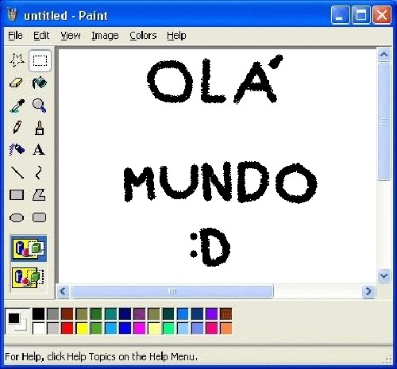

Sobre mim

Minha história com a tecnologia começou cedo. Já quando criança, era fascinado por um programinha engraçado que havia achado no computador da família: o Paint do Windows XP, onde passei muito tempo ponderando como algo tão avançado era possível... Mal sabia o pequeno eu dos avanços tecnológicos que viriam a seguir. Bons tempos.
Então minha curiosidade foi aumentando conforme os anos passavam e descobri mais das maravilhas que a tecnologia ofereceria à minha vida, desde diversos jogos e aplicativos úteis até editores de imagem e vídeo, dentre muitos outros.
Assim, no auge da minha ignorância, pensei: "não ficar melhor". Então chegaram meus dias de ensino médio e comecei a adentrar no mundo da programação, entendendo como tudo aquilo que sempre amei foi pensado, feito e produzido. E me vi fascinado por tudo novamente.
Conforme fui cursando meu ensino técnico em TI (graças aos incentivos de mamãe), tive a oportunidade de aprender a desenvolver meus próprios sites e softwares, o que faço até hoje com todo meu sorriso e esforço. Busco me aperfeiçoar cada vez mais para levar aquela mesma sensação de encantamento às novas pessoas que ficarão maravilhadas com meu trabalho.